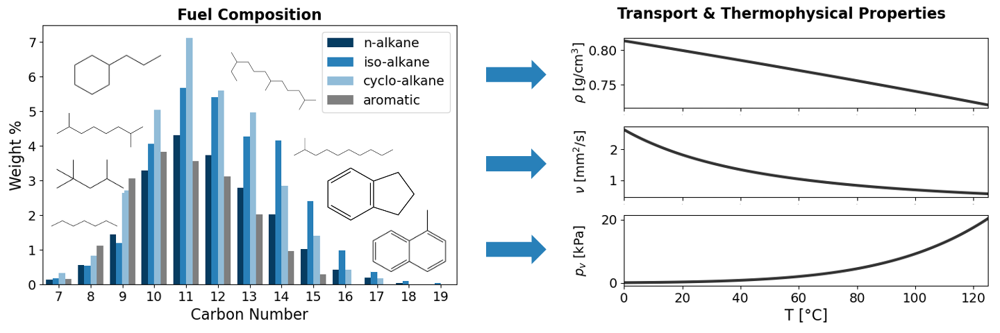

Welcome to FuelLib’s documentation!
The Fuel Library (FuelLib) is a fuel property prediction package based on group contribution methods (GCMs) and, when available, measurement data. FuelLib represents a fuel as a mixture of individual compounds from its GCxGC composition. The properties of each compound are taken from measured reference data or predicted with GCMs such as those of Constantinou and Gani[1][2], Nannoolal et al.[3], and UNIFAC 2.0[4]. Correlations and mixture rules then give the properties of the compounds and the fuel at other conditions (see Fuel Property Prediction Framework). If you need help or have questions, please use the GitHub discussion. The source code is available at github.com/NatLabRockies/FuelLib.


Citing this work
If you use FuelLib in your research, please cite the following software record:
Montgomery, David, Appukuttan, Sreejith, Yellapantula, Shashank, Perry, Bruce, and Binswanger, Adam. FuelLib (Fuel Library) [SWR-25-26]. Computer Software. https://github.com/NatLabRockies/FuelLib. USDOE Office of Energy Efficiency and Renewable Energy (EERE), Office of Sustainable Transportation. Vehicle Technologies Office (VTO). 27 Feb. 2025. Web. doi:10.11578/dc.20250317.1.
Or in BibTeX format:
@misc{fuellib_2025,
title = {FuelLib (Fuel Library) [SWR-25-26]},
author = {Montgomery, David and Appukuttan, Sreejith and Yellapantula, Shashank and Perry, Bruce and Binswanger, Adam},
doi = {10.11578/dc.20250317.1},
url = {https://doi.org/10.11578/dc.20250317.1},
howpublished = {[Computer Software] \url{https://doi.org/10.11578/dc.20250317.1}},
year = {2025},
month = {feb}
}
Installation
The easiest way to install FuelLib is via pip from pypi.org/project/fuellib:
pip install fuellib
After installation, the fl command-line tool is available for decomposing
SMILES strings, exporting fuel data, plotting fuel properties, and simulating
distillation. See Command-Line Interface (CLI) Tools for usage examples and options.
For a development setup, see Contributing.
Requirements
FuelLib requires Python 3.12 to 3.14 and the following packages, which are
installed automatically by pip:
numpy ≥1.19.0
pandas ≥1.0.0
scipy ≥1.5.0
pyyaml ≥5.0
matplotlib ≥3.0
rdkit ≥2022.3.1
pint ≥0.26.1
pydantic ≥2.13.5
uncertainties ≥3.2.3
Development tools (Sphinx, Ruff, ty, pytest) are available for developers installing from source; see Contributing.
Basic usage
See the Basic Usage tutorial for an introduction to
creating a Fuel object and predicting fuel properties.
Contents:
- Getting Started
- Fuel Property Prediction Framework
- Group Contribution Methods
- Reference Compounds
- Correlations and Mixture Rules
- Notation
- Individual component properties (
fuellib.correlate.components) - Mixture properties (
fuellib.correlate.mixture)- Conventional mixing rules
- Mixture density
- Mixture kinematic viscosity
- Mixture vapor pressure
- Mixture vapor pressure (Antoine coefficients)
- Mixture surface tension
- Mixture thermal conductivity
- Mixture freeze point
- Mixture flash point
- Mixture heat of combustion
- Mixture yield sooting index
- Mixture smoke point
- Mixture derived cetane number
- Mixture aromatics content
- Mixture naphthalenes content
- References
- Simulation
- Tutorials
- Validation
- Source Code
- Contributing